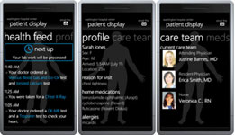
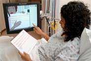

Research
My research interests lie within the field of Human-Computer Interaction, especially health-centered systems. My work is focused on Relational Agents and how the use of these agents can positively impact patient care. In particular, I am interested in how the use of these agents can improve patient activation – patients becoming more involved in their health – and patient-doctor communication.
Selected Projects
The Drinks Project: Conducting Automated Interviews for Longitudinal Health Follow-up
In my Ph.D. thesis, I am exploring methods for conducting automatic, long-term health interviews that maximize both the quality and quantity of self-reported health data. In my thesis experiment, I am collecting and evaluating weekly self-reported health data from over 350 participants.
A Mobile Phone Experience for Emergency Department Patients
A trip to the Emergency Department can be stressful for both patients and their loved ones. During my internship at Microsoft Research, I collaborated with Amy Karlson, Dan Morris, Greg Smith, Desney Tan and Justin Gatewood to create a mobile phone application for Emergency Department patients. This application provides patients with near real-time updates on their progress, care plan and care team. During a two-week field trial, 25 patients and 8 family members used the mobile phone interface during their visit. Feedback and observations suggest that this approach is an extremely positive direction for reducing patient anxiety, improving awareness, promoting patient empowerment, and enhancing ownership of medical information in hospitals.
Virtual Nurse: An Embodied Conversational Agent for Hospital Discharge
We have developed a "virtual nurse" that is able to teach patients what they need to know before leaving the hospital. The bedside agent interacts with patients prior to discharge and teaches patients about their medication regimen, follow-up appointments and medical conditions, in an effort to reduce re-hospitalizations. This project is in conjunction with Boston Medical Center.
Recent Press:
Tinker: A Virtual Agent Exhibit at the Boston Museum of Science
We have developed a virtual museum guide agent that interacts with visitors at the Museum of Science in Boston, MA. The agent uses a biometric identification system to reidentify users and continue conversations over time. Over 150,000 museum guests have interacted with Tinker, and a large-scale field experiement shows that her relational behavior can have a postive impact on engagement and learning.